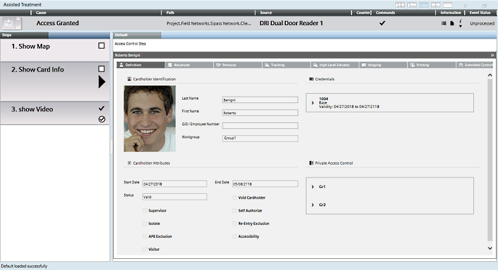
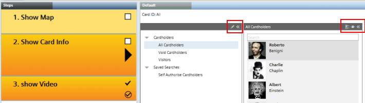

Configure an Access Control Step
This procedure is part of the workflow for configuring an operating procedure with access control.
Prerequisites
- You configured an operating procedure, to which you now want to add an access control step.
Add an Access Control Step to the Operating Procedure
Skip this section if you want to modify an existing access control step.
- Select Project > System Settings > Operating Procedures > […] > [operating procedure].
- The Operating Procedures tab displays the Filters, General Settings, and Steps of the selected operating procedure.
- Click New
 , and select New Step Access Control.
, and select New Step Access Control. - In the New Object dialog box, enter a name and description, for example, Cardholder Info Step.
- Click OK.
- The new access control step displays under the operating procedure in System Browser, and is added to the Steps expander in the Operating Procedures tab.
Configure the Access Control Step
This section covers the basic access-control step configuration for Sipass events.
- Select Project > System Settings > Operating Procedures > […] > [operating procedure]>[access control step].
- In the Operating Procedures tab, open the General Settings expander.
- Configure if the access control step is Mandatory: Set Yes to force operators to execute and check off the step.
- Configure if the access control step is Repeatable: Set Yes to allow operators to check the cardholder details again after they execute and check off the step.
- Click Save
 .
. - When the step executes:
- if the procedure was triggered by a SiPass event pertaining to a door reader object, it displays the cardholder information.
- for other SiPass events, it displays a list of all cardholders from the SiPass server that raised the event.


The cardholder information and all-cardholders views are provided for read-only purposes in the Desigo CC OP step, and any commands visible there are not supported.
These include, for example, the command icons in the headers used to switch between list and table view, filter cardholders, create and delete search views, show/hide columns, and so on.

(Optional) All Cardholders Display for Non-SiPass Events
By default, for non-SiPass events, the access control step displays:
- the list of all cardholders from the connected SiPass server, if there is only one
- a ‘no relevant data’ message if there is more than one SiPass server.
You can customize this behavior as follows:
- In the Operating Procedures tab, open the Additional Settings expander.
- Select Fixed Links.
- In System Browser, select the Manual navigation check box.
- Select Management View.
- Expand Project > Field Networks > [SiPass network] > and drag-and-drop the desired SiPass servers into the Fixed Links box.
- For non-SiPass events, the step will now always display the list of all cardholders from the topmost SiPass server in the Fixed Links box.
- (Optional) To make the all-cardholders display conditional:
a. In the Fixed Links box, select a SiPass server.
b. In the Filters expander, set the Events and/or Time and Organization Mode conditions for using this server. For example, event Category = Security.
c. Repeat steps a. and b. above for any other SiPass servers as required. - Click Save.
- For non SiPass events, the step displays the list of all cardholders from the first SiPass server whose filters match the triggering event. If none is found, the step displays a ‘no relevant data’ message.
NOTE: If no filters are configured for a SiPass server, all events will match.
Operating Procedure triggered by: | Sipass event | Non-SiPass event | |
pertaining to | other | ||
What displays in OP step: |
Cardholder information |
List of all cardholders from SiPass server that raised the event | If no Fixed Links configured: - List of all cardholders from the connected SiPass server , if there is only one. - ‘no relevant data’ message if there is more than one SiPass server.
|
If Fixed Links configured: - List of all cardholders from the first SiPass server whose filters match the event. - ‘no relevant data’ message if no match found
| |||
NOTE: To set what events trigger the procedure, see Define the Filters of the Operating Procedure, above.